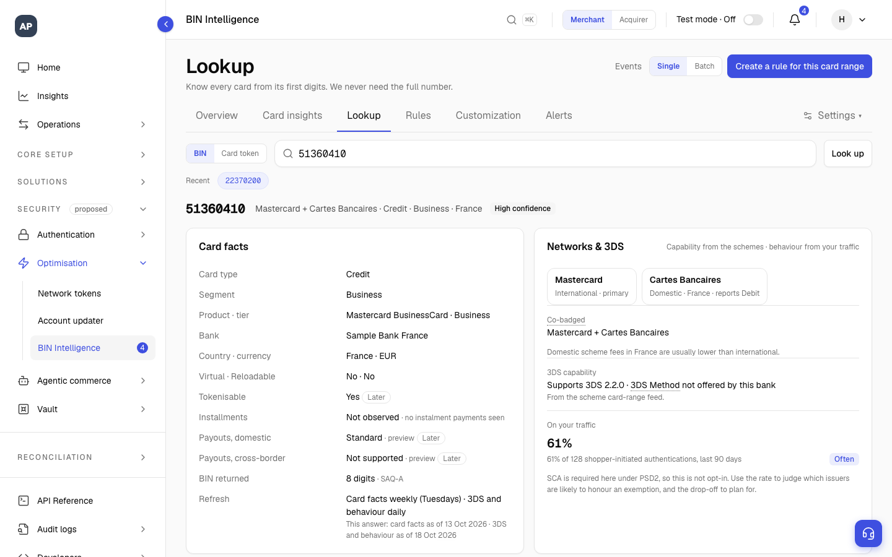
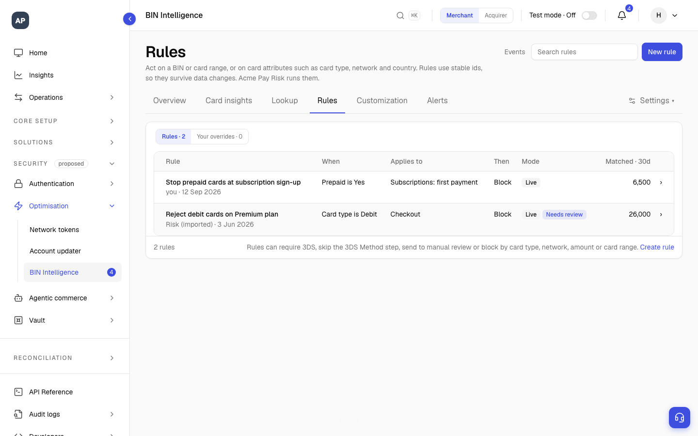
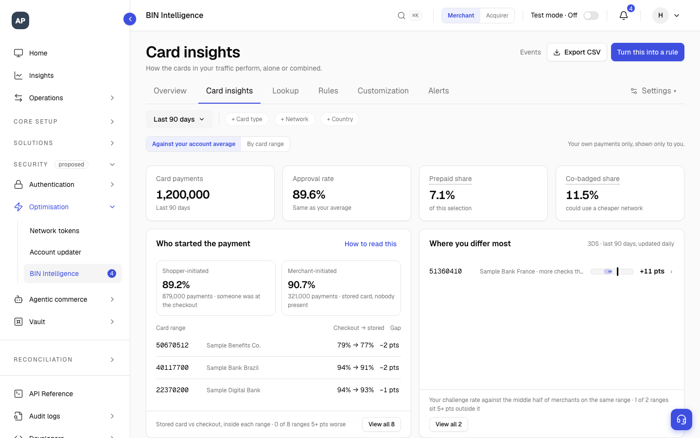
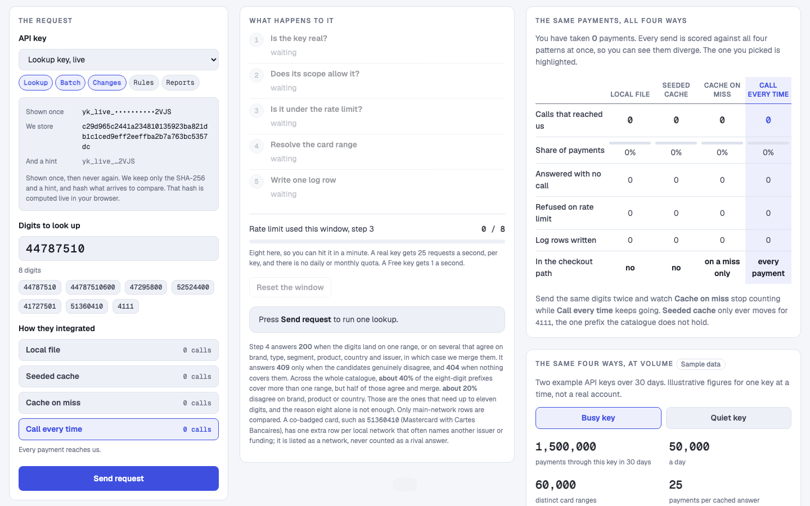
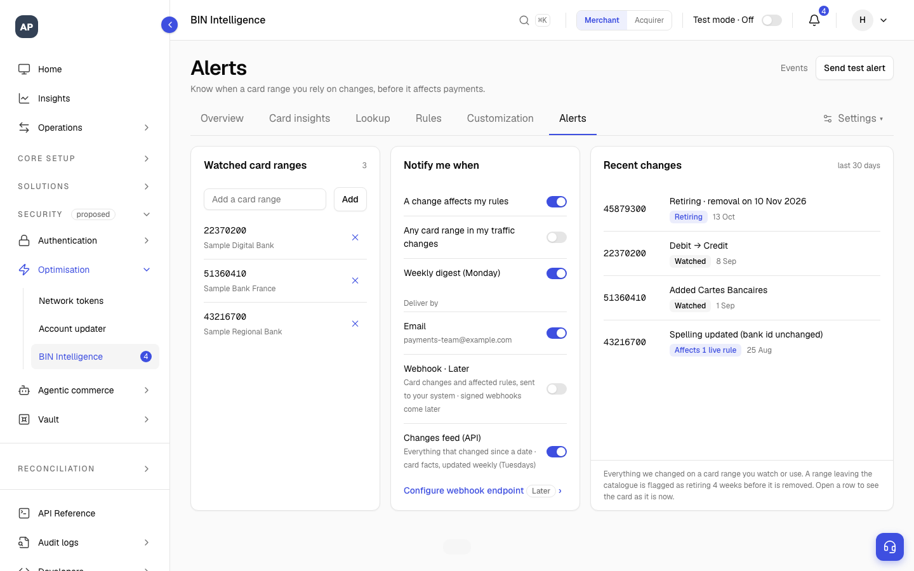
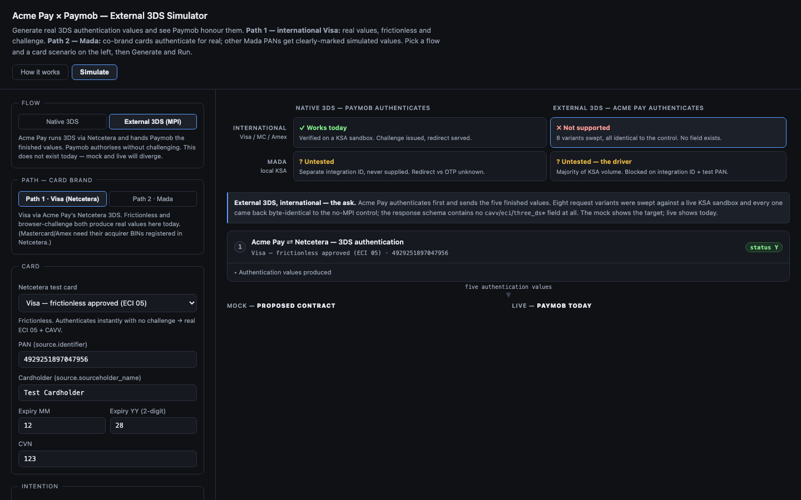
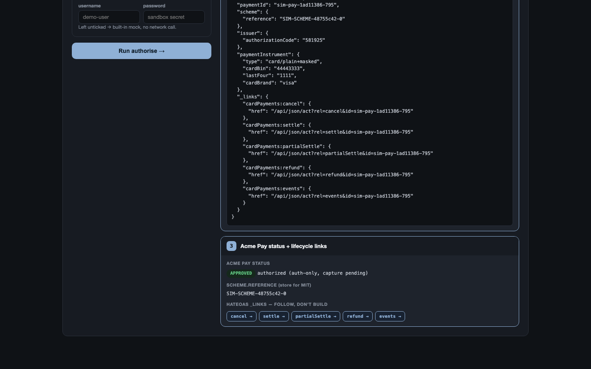

I help businesses get paid. I work out what to build, show it as a working prototype before anyone writes code, and then see it through to launch with the engineering team. This portfolio tells five of those stories in plain words.
I work on the parts of online payments that decide whether money moves: what we know about a card, the security check a bank runs, and the connections to payment companies around the world.
| # | Story | What it shows about me |
|---|---|---|
| 1 | BIN Intelligence: know a card before you charge it | Building a new product from nothing: research, pricing, prototype, requirements |
| 2 | A planning assistant that turns weeks into an hour | Designing an AI assisted internal tool that removes a bottleneck |
| 3 | Connecting new ways to pay, from plan to launch | Delivery, scope discipline and proof that things work |
| 4 | A security roadmap you can play like a video | Making a complicated plan simple enough for everyone to agree on |
| 5 | Finding where money and time leak | Using data and small tools to make problems visible |
The first digits of every card number are called the BIN. They reveal what kind of card it is (credit, debit, prepaid, business) and which bank issued it. I designed a product that turns those digits into useful answers for online shops and the companies that process their payments.
Shops only learn what a card is after they charge it. The card data they buy is often out of date. And nobody tells them how a bank is likely to behave, for example whether it will ask the shopper for an extra security check.
I researched the market, wrote a one page plan and the full requirements, designed the pricing, and built a clickable console plus a working API. People could try the product before any budget was committed.
A clear plan in three stages and a simple privacy rule: every shared number describes a group of cards, never another shop. That rule protects shops and also makes the product different from what others sell.





| What I produced | Why it mattered |
|---|---|
| One page plan | The problem, why now, the three big ideas, and the decisions leaders needed to make, each with my recommendation |
| Full requirements | What to build, user stories, the test plan and which teams are involved |
| Prototype and API | A console and a real API on over a million card ranges, with keys, limits and request records |
| Pricing and business case | Three plans, from free to premium, built from research with possible buyers |
Before a business can accept payments through a new payment company, someone has to read that company's documents, compare it with what already exists, find who is affected, and write a plan for engineers. That reading was slowing the whole roadmap down.
Each plan took one to two weeks. The quality depended on who wrote it, and engineers sometimes got plans with missing pieces.
I designed a six step AI assisted process that runs from a single command and ends with a plan and engineering tasks, always checked by a person.
A plan now takes under an hour, and more than 30 have been produced this way, each reviewed by a technical lead.
Stripe, Adyen, PayPal, Nuvei, Airwallex, dLocal, Worldpay, Moyasar, Paymob, Tap, Tazapay, PayU, Unlimint, Emerchantpay, PagBank, Pagar.me, Redeban, Netcetera, Belvo, TrustPayments and Xendit.
Every country has its own favourite ways to pay: cards, digital wallets, instant bank transfers. I plan each connection, test it, and get it ready to launch together with engineering and quality assurance. Some examples:
Mapped 147 bank refusal codes by card brand and tested 22 scenarios, so shops can see why a payment was refused.
Proved in test systems that each one accepts a bank security check carried out elsewhere, and wrote down exactly what data to send.
Turned the central bank's rules for repeat payments into a simple charging plan and requirements.
Mapped every switch needed on both sides to turn on card tokens, so shops could roll them out.
Took connections from requirements through certification to live payments.
Tested BLIK, Pix, iDEAL and Klarna, and mapped how refunds are reported.
Worked through local rules on invoices and keeping data in India, then tested the payment flows.
Checked how each one reports fraud to shops, and defined what to build.
Build what people need now. Extra options wait until there is a real business reason. Every extra switch is another thing that can go wrong.
Nothing is called done without test evidence and a quality sign off. When a test showed the plan was wrong, I corrected the plan.
3-D Secure is the extra check your bank sometimes asks for when you pay online, such as a code sent to your phone. It stops fraud, but too many checks make people give up. There were 23 ideas to improve it, and no shared picture of how they fit together.

Linked all 23 ideas to owners and tasks, and built a simulator that plays each one with its result, cost and who pays if fraud happens.
Built three small testers for Paymob, Moyasar and Worldpay. Each sends a test payment two ways and shows where the answers differ.
Long debates got shorter because everyone could see the difference. The testers turned guesses into proof and unblocked launches.
Payment companies lose money in places nobody owns, and lose time asking "what is the status?". I use data and small tools to make both visible, sized and owned.

| Product | Payments | Tools |
|---|---|---|
| Research, strategy, one page plans, requirements, pricing, business cases, roadmaps, getting people to agree | Card security (3-D Secure), card data, card tokens, Pix, UPI, BLIK, digital wallets, refusal codes, fraud reports, PCI DSS | APIs, SQL, test systems, prototypes in HTML and Node, AI assistants, Jira and Confluence |
Every prototype opens in a normal web browser, with no login. The three testers are small apps with their code included. Each has a narrated, captioned video of under two minutes.
| Prototype | What you will see | Video |
|---|---|---|
| BIN Intelligence console | Card lookup, card insights, rules tested on past payments, corrections and alerts | 1:56 |
| How the card API works | One request followed from the key, to the limit, to the answer and its record | 1:14 |
| Security roadmap simulator | 23 ideas for online card security, each played step by step | 1:36 |
| Paymob tester | The same test payment sent two ways, with the differences side by side | 1:29 |
| Moyasar tester | A first payment, then a repeat charge on the saved card | 1:18 |
| Worldpay tester | Two ways to connect to Worldpay, tested side by side | 1:37 |
Four more pieces are internal analysis, so I show them in interviews rather than online: the card data discovery explorer, the system design, the online security deep dive, and the revenue leak finder.
Website: add your Render link here
Email: huzafaisam16@gmail.com · LinkedIn: linkedin.com/in/whozz